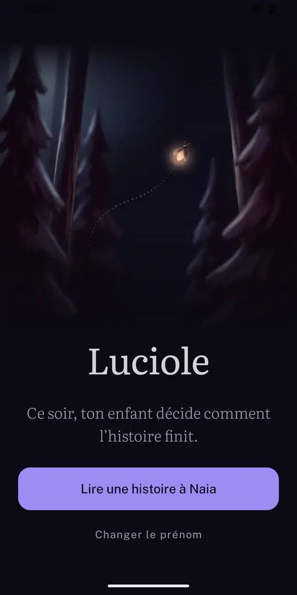
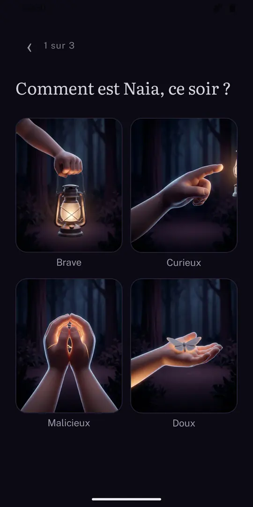
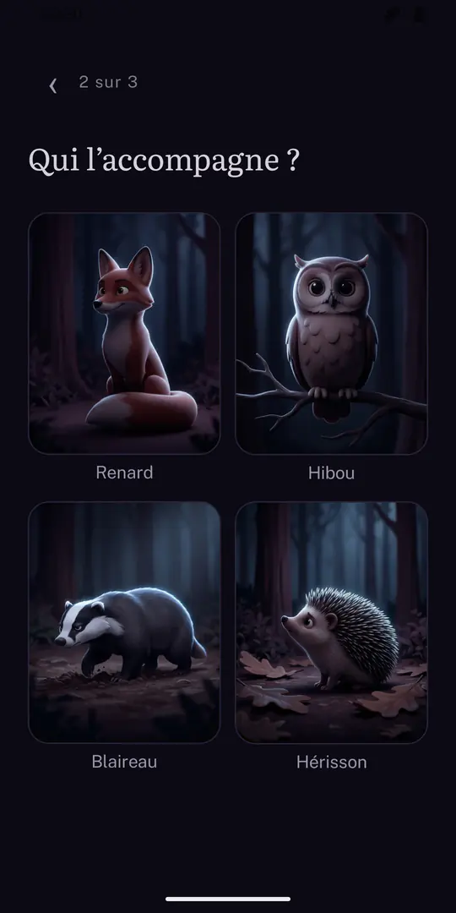
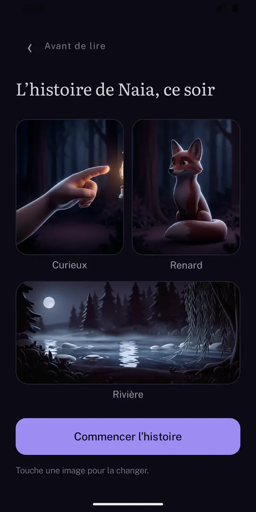
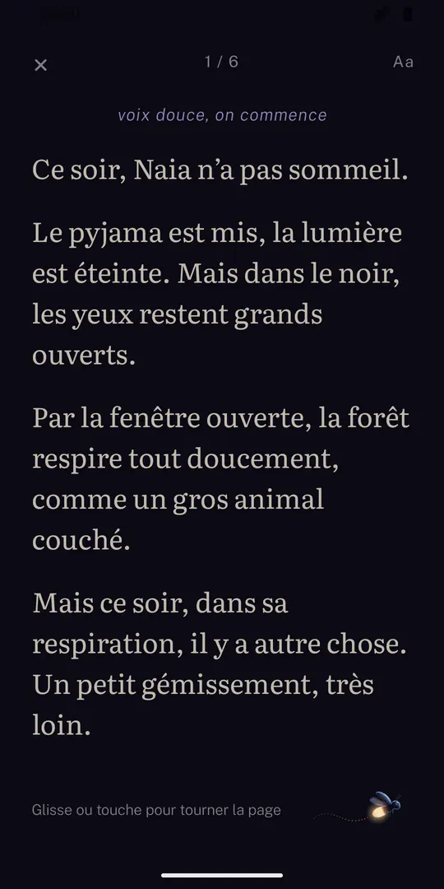
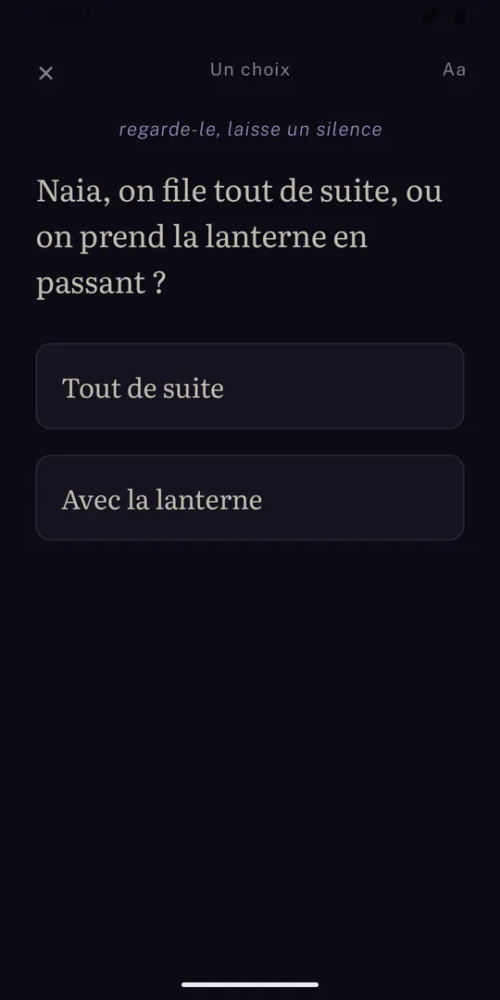

Luciole
Ce soir, ton enfant décide comment l’histoire finit.
Une histoire lue à voix haute, décidée par l’enfant
-
Vous lisez, il décide
Vous tenez le téléphone et vous lisez. Quatre fois, le récit s’arrête sur une question que vous posez à votre enfant. Il répond, vous touchez son choix, l’histoire bifurque.
-
Trois fins
Les choix changent vraiment la suite. Ce n’est jamais tout à fait la même histoire d’un soir à l’autre.
-
Son prénom, son héros, son compagnon, son décor
Brave, curieux, malicieux ou doux ; le renard, le hibou, le blaireau ou le hérisson ; la clairière, la rivière ou la grotte. Quarante-huit histoires, écrites, pas assemblées par une machine.
-
Pensée pour le noir
Écran sombre, texte crème, grande police réglable en un geste. Chaque page est un souffle : vous la lisez, vous tournez. Les indications qui vous sont destinées sont en italique et ne se lisent pas à voix haute.
-
« La nuit qui appelle »
La forêt n’arrive pas à s’endormir : au fond, quelqu’un pleure. Un enfant qui n’a pas sommeil part l’aider. Pour les cinq à huit ans, environ dix minutes de lecture. D’autres histoires arriveront avec les mises à jour.
Comment ça marche
Le prénom de votre enfant, puis trois images à choisir : comment il est ce soir, qui l’accompagne, où ça se passe.
Vous lisez à voix haute, une page par souffle. Un geste pour tourner.
À chaque question, votre enfant décide. Vous touchez son choix, et vous continuez.
Captures d’écran






Rien ne sort du téléphone
Luciole ne collecte, ne transmet et ne partage aucune donnée. Pas de compte, pas de connexion, pas de publicité, pas d’abonnement. L’application ne déclare aucune permission Android, pas même l’accès à Internet : elle ne peut techniquement rien envoyer, et elle fonctionne en mode avion.
Sur le téléphone, elle garde le prénom de votre enfant et l’accord choisi, les choix faits avant chaque lecture, la taille de texte, et l’historique des histoires lues. Désinstaller l’application efface tout ça.
Questions
Mon enfant peut-il l’utiliser seul ?
Ce n’est pas fait pour. Luciole est un rituel à deux : le parent tient le téléphone et lit, l’enfant écoute et décide. Il n’y a rien à lire pour lui, et rien qui bouge à l’écran.
Pour quel âge ?
De cinq à huit ans. Le vocabulaire est calibré pour un enfant de six ans qui écoute, sans supposer qu’il sache lire.
Combien d’histoires ?
Une, « La nuit qui appelle », en quarante-huit versions selon le héros, le compagnon et le décor choisis, avec trois fins. D’autres histoires arriveront avec les mises à jour de l’application ; rien ne se télécharge, tout est dans le téléphone.
Faut-il une connexion ?
Non, jamais. L’application ne demande pas la permission d’accéder à Internet.
Peut-on reprendre une histoire interrompue ?
Oui. Si l’enfant s’endort au milieu, l’accueil propose de reprendre là où la lecture s’est arrêtée.